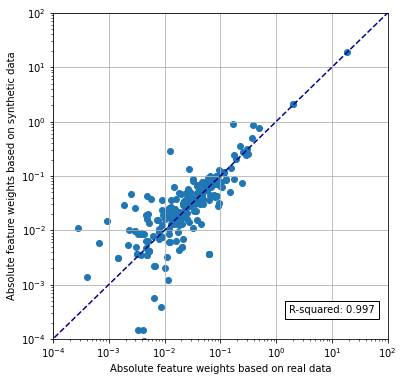

Testing of SAMueL-1 synthetic data: logistic regression model¶
In this notebook we test sthe ability of synthetic data to train a logistic regression model that is tested on real data. Data comes from 5 stratified k-vold traing/test sets. Synthetic data is generated from each k-fold training set. It is tested using the matching test set (which is not used in production of the synthetic data).
Load packages¶
# Turn warnings off to keep notebook tidy
import warnings
warnings.filterwarnings("ignore")
import os
import matplotlib.pyplot as plt
from matplotlib.lines import Line2D
import numpy as np
import pandas as pd
from sklearn.preprocessing import StandardScaler
from sklearn.linear_model import LogisticRegression
from sklearn.metrics import auc
from sklearn.metrics import roc_curve
Load data¶
data_loc = './../data/sam_1/kfold_5fold/'
train_data, test_data, synthetic_data = [], [], []
for i in range(5):
train_data.append(pd.read_csv(f'{data_loc}train_{i}.csv'))
test_data.append(pd.read_csv(f'{data_loc}test_{i}.csv'))
#synthetic_data.append(pd.read_csv(f'{data_loc}synth_train_{i}.csv'))
synthetic_data.append(pd.read_csv(f'{data_loc}synthetic_{i}.csv'))
Function to standardise data¶
def standardise_data(X_train, X_test):
"""
Converts all data to a similar scale.
Standardisation subtracts mean and divides by standard deviation
for each feature.
Standardised data will have a mena of 0 and standard deviation of 1.
The training data mean and standard deviation is used to standardise both
training and test set data.
"""
# Initialise a new scaling object for normalising input data
sc = StandardScaler()
# Set up the scaler just on the training set
sc.fit(X_train)
# Apply the scaler to the training and test sets
train_std=sc.transform(X_train)
test_std=sc.transform(X_test)
return train_std, test_std
Build model and make predictions¶
For each of the k-fold sets, a model is built for each of real training data and synethetic data (generated based on that training set). The two models then predict probability of receiving thrombolysis for the matching k-fold test set.
# Set up lists
observed_real = []
predicted_proba_real = []
predicted_real = []
observed_synthetic = []
predicted_proba_synthetic= []
predicted_synthetic = []
feature_weights_real = []
feature_weights_synthetic = []
# Loop through k folds
for k_fold in range(5):
# Get k fold split
train = train_data[k_fold]
test = test_data[k_fold]
synthetic = synthetic_data[k_fold]
# Get X and y
X_train = train.drop('S2Thrombolysis', axis=1)
X_test = test.drop('S2Thrombolysis', axis=1)
X_synthetic = synthetic.drop('S2Thrombolysis', axis=1)
y_train = train['S2Thrombolysis']
y_test = test['S2Thrombolysis']
y_synthetic = synthetic['S2Thrombolysis']
# One hot encode hospitals
X_train_hosp = pd.get_dummies(X_train['StrokeTeam'], prefix = 'team')
X_train = pd.concat([X_train, X_train_hosp], axis=1)
X_train.drop('StrokeTeam', axis=1, inplace=True)
X_test_hosp = pd.get_dummies(X_test['StrokeTeam'], prefix = 'team')
X_test = pd.concat([X_test, X_test_hosp], axis=1)
X_test.drop('StrokeTeam', axis=1, inplace=True)
X_synthetic_hosp = pd.get_dummies(X_synthetic['StrokeTeam'], prefix = 'team')
X_synthetic = pd.concat([X_synthetic, X_synthetic_hosp], axis=1)
X_synthetic.drop('StrokeTeam', axis=1, inplace=True)
# Train and test using real data
# Standardise X data
X_train_std, X_test_std = standardise_data(X_train, X_test)
# Define and Fit model
model = LogisticRegression(solver='lbfgs')
model.fit(X_train_std, y_train)
# Get predicted probabilities
y_probs_real = model.predict_proba(X_test_std)[:,1]
observed_real.append(y_test)
predicted_proba_real.append(y_probs_real)
predicted_real.append(y_probs_real >= 0.5)
# Get feature weights
weights = model.coef_[0]
feature_weights_real.append(weights)
# Train and test using synthetic data
# Standardise X data
X_train_std, X_test_std = standardise_data(X_synthetic, X_test)
# Define and Fit model
model = LogisticRegression(solver='lbfgs')
model.fit(X_train_std, y_synthetic)
# Get feature weights
weights = model.coef_[0]
feature_weights_synthetic.append(weights)
# Get predicted probabilities
y_probs_synthetic = model.predict_proba(X_test_std)[:,1]
observed_synthetic.append(y_test)
predicted_proba_synthetic.append(y_probs_synthetic)
predicted_synthetic.append(y_probs_synthetic >= 0.5)
Test accuracy¶
accuracy_real = []
accuracy_synthetic = []
for k_fold in range(5):
correct = predicted_real[k_fold] == test_data[k_fold]['S2Thrombolysis']
accuracy_real.append(correct.mean())
correct = predicted_synthetic[k_fold] == test_data[k_fold]['S2Thrombolysis']
accuracy_synthetic.append(correct.mean())
real_mean = np.mean(accuracy_real)
real_sem = np.std(accuracy_real)/(np.sqrt(5))
synthetic_mean = np.mean(accuracy_synthetic)
synthetic_sem = np.std(accuracy_synthetic)/(np.sqrt(5))
results = pd.DataFrame()
results['real'] = accuracy_real
results['synthetic'] = accuracy_synthetic
print ('Individual kfold results:')
print (results.round(3))
print ()
print ('Accuracy when model trained using real data:')
print (f'Mean = {real_mean:0.3f}, SEM = {real_sem:0.3f}')
print ()
print ('Accuracy when model trained using synthetic data')
print (f'Mean = {synthetic_mean:0.3f}, SEM = {synthetic_sem:0.3f}')
Individual kfold results:
real synthetic
0 0.831 0.829
1 0.835 0.833
2 0.830 0.828
3 0.833 0.831
4 0.834 0.835
Accuracy when model trained using real data:
Mean = 0.833, SEM = 0.001
Accuracy when model trained using synthetic data
Mean = 0.831, SEM = 0.001
Compare feature weights¶
Compare mean feature weights across 5 k-fold model fits.
fig = plt.figure(figsize=(6,6))
ax1 = fig.add_subplot(111)
x = abs(np.mean(feature_weights_real, axis=0))
y = abs(np.mean(feature_weights_synthetic, axis=0))
ax1.scatter(x,y)
ax1.set_xscale('log')
ax1.set_yscale('log')
ax1.set_xlim(1e-4, 1e2)
ax1.set_ylim(1e-4, 1e2)
ax1.plot([0, 100], [0, 100], color='darkblue', linestyle='--')
ax1.grid()
rsquare = np.corrcoef(x, y) ** 2
rsquare = rsquare[0,1]
text = f'R-squared: {rsquare:0.3f}'
ax1.text(1.7, 0.0003,text, bbox=dict(facecolor='white', edgecolor='black'))
ax1.set_xlabel('Absolute feature weights based on real data')
ax1.set_ylabel('Absolute feature weights based on synthetic data')
plt.show()

Receiver operator characteristic curve¶
fpr_real = []
tpr_real = []
auc_real = []
fpr_synthetic = []
tpr_synthetic = []
auc_synthetic = []
for k_fold in range(5):
y_test = test_data[k_fold]['S2Thrombolysis']
# real ROC
fpr, tpr, thresholds = roc_curve(y_test, predicted_proba_real[k_fold])
fpr_real.append(fpr)
tpr_real.append(tpr)
auc_real.append(auc(fpr, tpr))
# Synthetic ROC
fpr, tpr, thresholds = roc_curve(y_test, predicted_proba_synthetic[k_fold])
fpr_synthetic.append(fpr)
tpr_synthetic.append(tpr)
auc_synthetic.append(auc(fpr, tpr))
auc_real_mean = np.mean(auc_real)
auc_synthetic_mean = np.mean(auc_synthetic)
auc_real_sem = np.std(auc_real)/(np.sqrt(5))
auc_synthetic_sem = np.std(auc_synthetic)/(np.sqrt(5))
print ('ROC AUC when model trained using real data:')
print (f'Mean = {auc_real_mean:0.3f}, SEM = {auc_real_sem:0.3f}')
print ()
print ('ROC AUC when model trained using synthetic data')
print (f'Mean = {auc_synthetic_mean:0.3f}, SEM = {auc_synthetic_sem:0.3f}')
ROC AUC when model trained using real data:
Mean = 0.904, SEM = 0.001
ROC AUC when model trained using synthetic data
Mean = 0.900, SEM = 0.001
fig = plt.figure(figsize=(6,6))
# Plot ROC
ax1 = fig.add_subplot()
ax1.plot([0, 1], [0, 1], color='darkblue', linestyle='--')
ax1.set_xlabel('False Positive Rate')
ax1.set_ylabel('True Positive Rate')
ax1.set_title('Receiver Operator Characteristic curves\nfor models trained with real or synthetic data')
for k in range(5):
ax1.plot(fpr_real[k],tpr_real[k], color='green', alpha = 0.6,
label = 'Real training data')
ax1.plot(fpr_synthetic[k],tpr_synthetic[k], color='red', linestyle='--',
alpha = 0.6, label = 'Synthetic training data')
custom_lines = [Line2D([0], [0], color='green', alpha=0.6, lw=2),
Line2D([0], [0], color='red', linestyle='--', alpha = 0.6,lw=2)]
plt.legend(custom_lines,
[f'Trained with real data (AUC: {auc_real_mean:.3f})',
f'Trained with synthetic data (AUC: {auc_synthetic_mean:.3f})'],
loc='lower right')
plt.grid(True)
plt.savefig('images/synthetic_roc_log_reg.png')
plt.show()